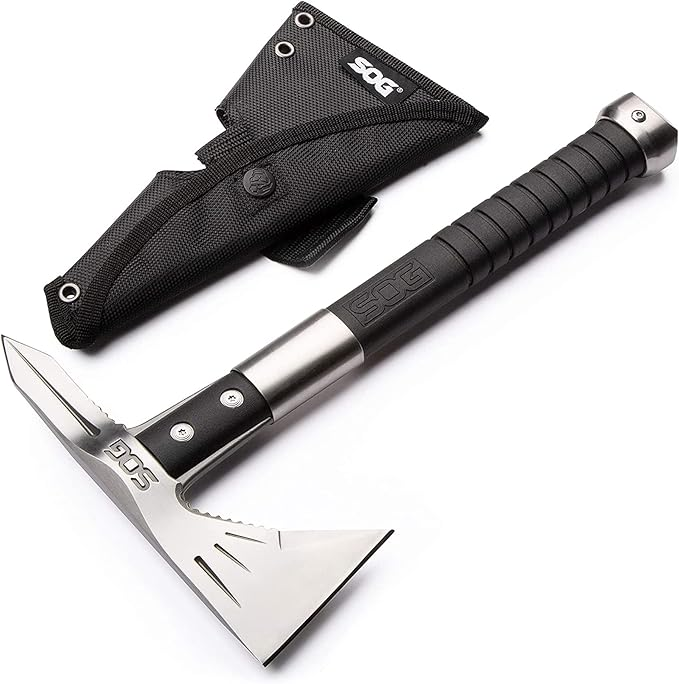
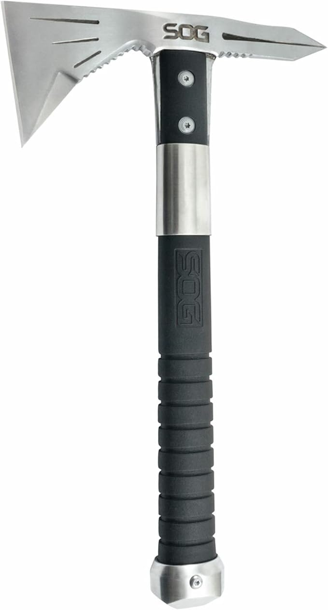
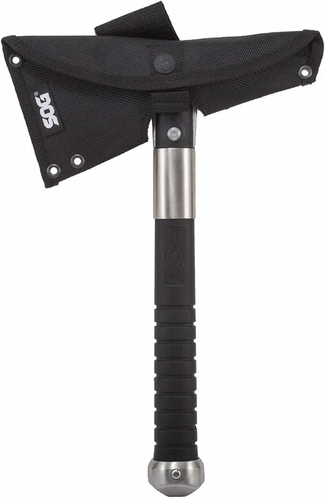
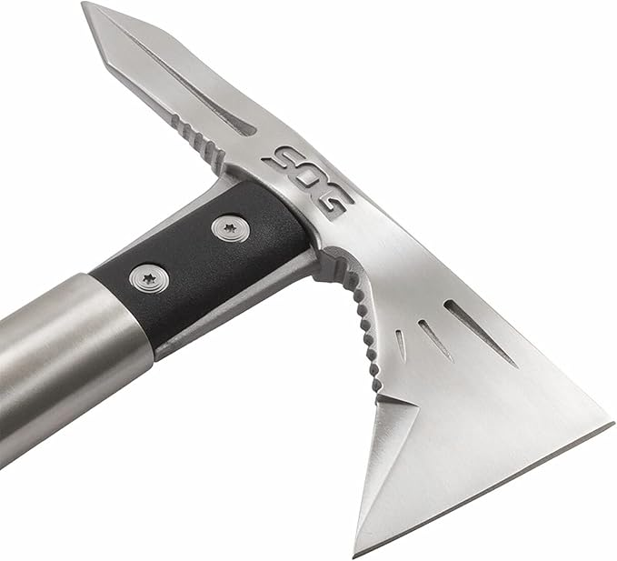

Price:
$50.55
| Brand | SOG Specialty Knives |
| Blade Length | 2.75 Inches |
| Overall Length | 12.5 Inches |
| Material | 3Cr13MoV Stainless Steel |
| Handle Material | Glass-Reinforced Nylon |
| Weight | 23.1 Ounces |
The SOG Voodoo Hawk Mini is the ultimate multi-purpose tool for survivalists and outdoor enthusiasts. Combining elements from the tactical Tomahawk and the classic hatchet, it features a lightweight design that doesn't sacrifice power. Whether you are clearing brush at a campsite or practicing your throwing technique, the Voodoo Hawk Mini provides the precision and durability SOG is known for.
Shipper / Seller: Bamazone